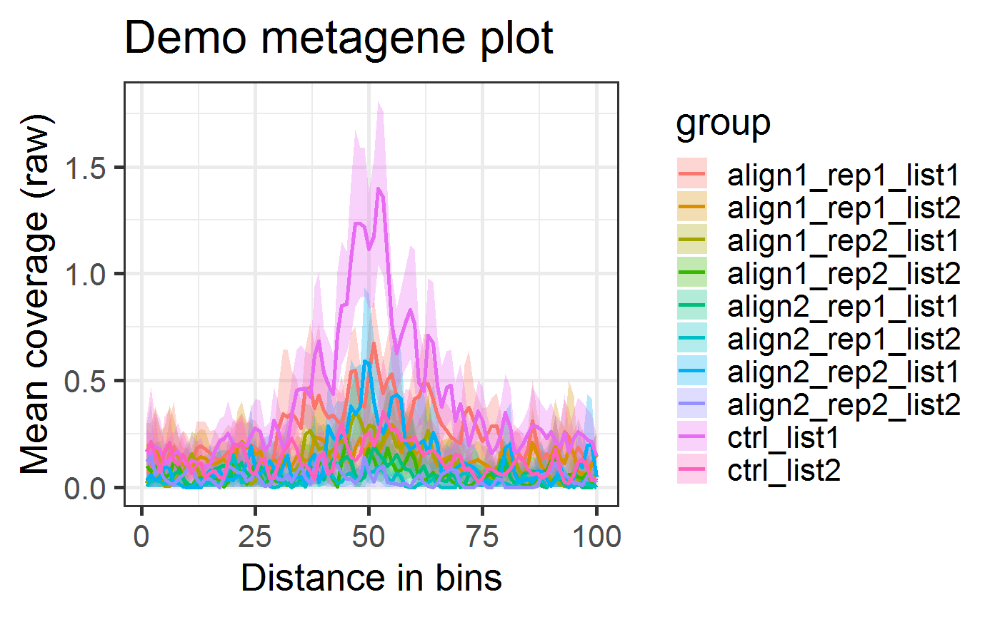
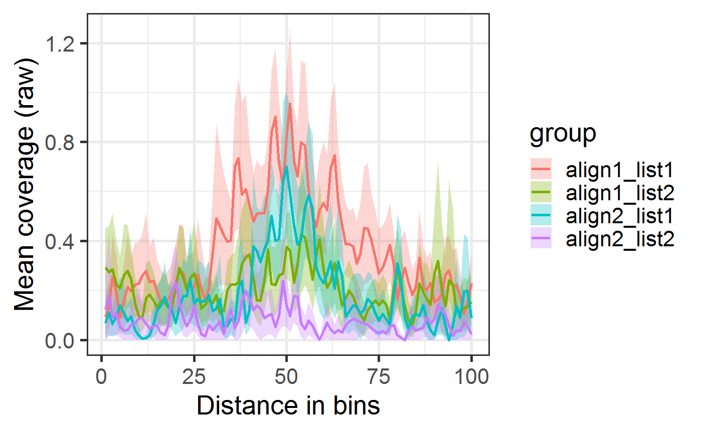
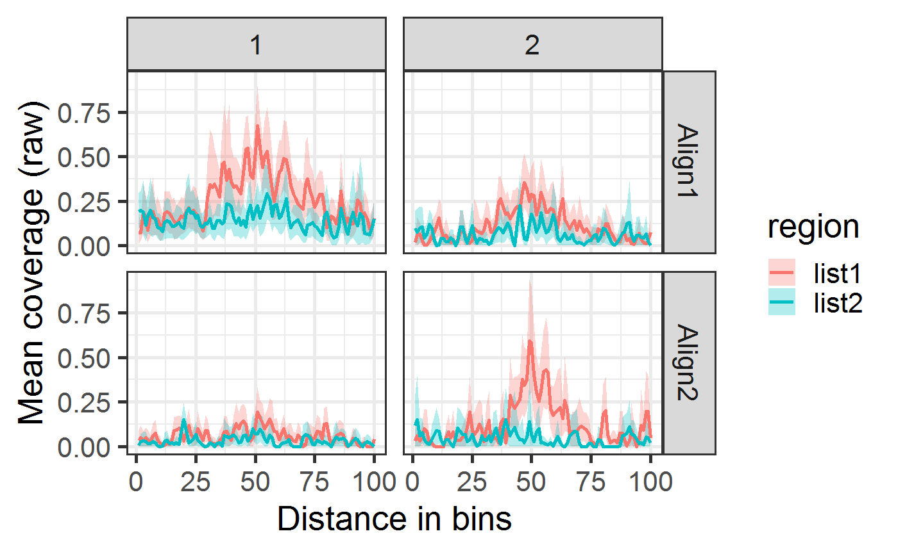
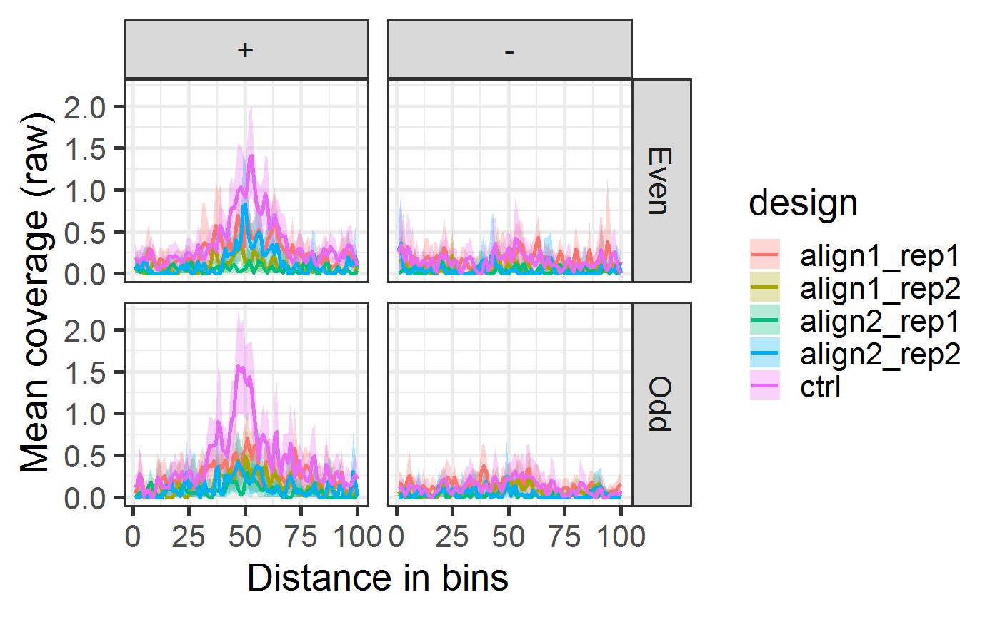
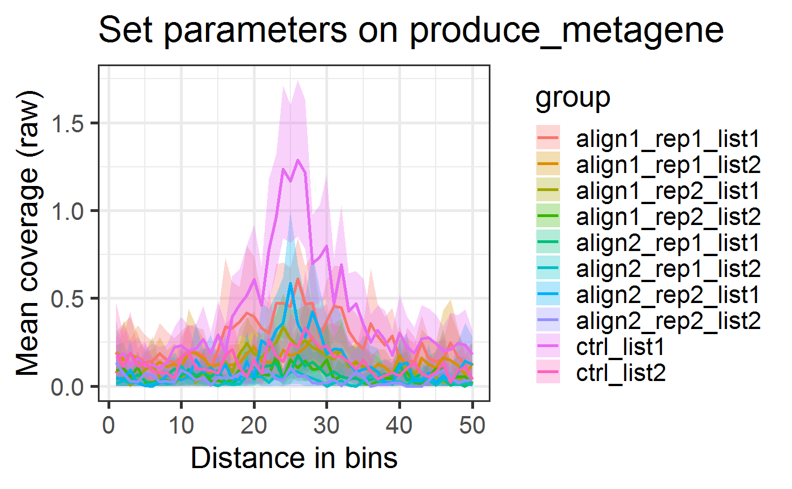
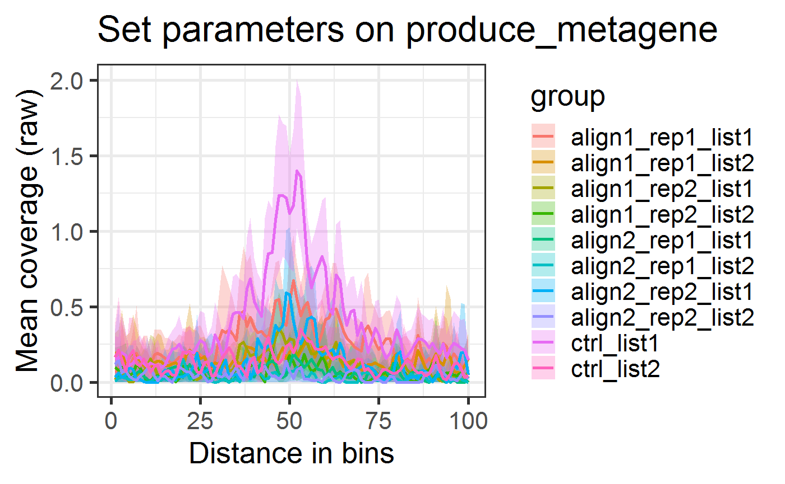
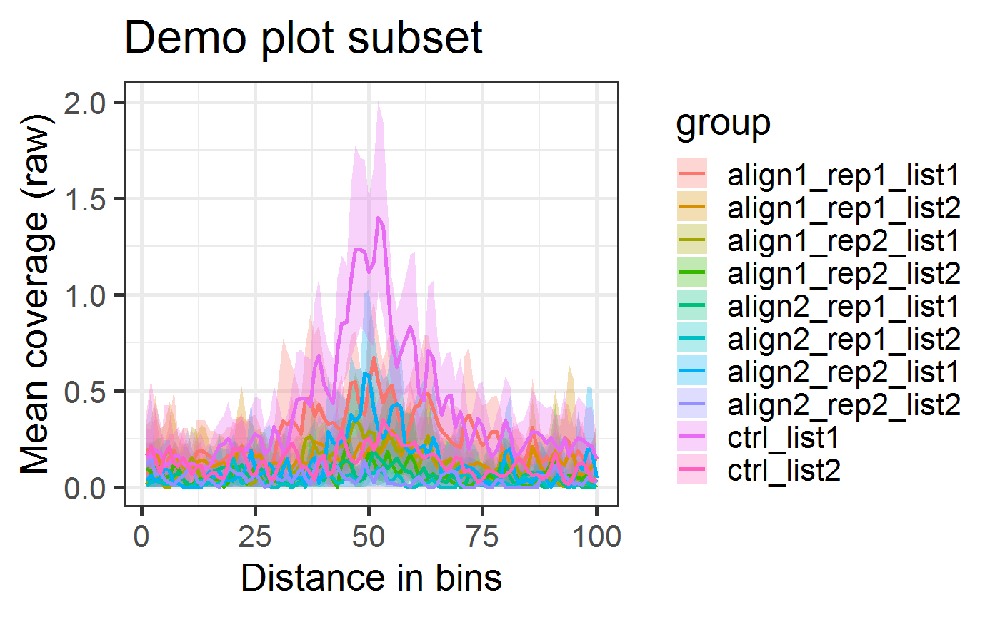
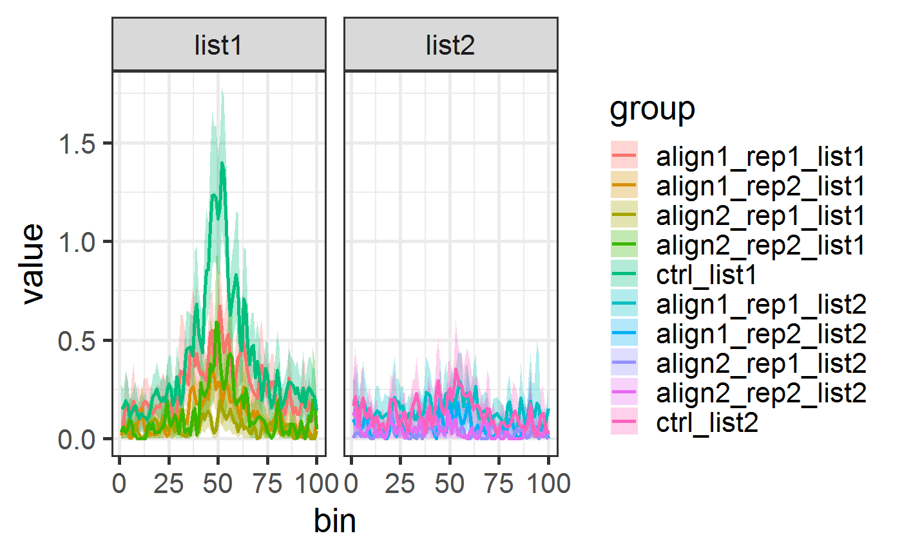

metagene2: a package to produce metagene plots
metagene2.RmdPackage: metagene2
Modified: April 2nd, 2019
Compiled: Thu Oct 03 09:45:28 2019
License: Artistic-2.0
Introduction
This package produces metagene plots, and is the successor to the metagene package. Users of metagene can find a list of differences between metagene2 and metagene in the Differences with metagene section of this vignette.
Metagene plots aggregate coverages from multiple sources (bam files) over multiple regions (genes, cofactor binding sites, etc.) to provide profiles of average coverage. They are useful for many different purposes, such as comparing the binding profiles of DNA-interacting proteins at selected groups of features. In a typical analysis, these features will be the transcription start sites (TSS) of genes, transcription factor binding sites, or enhancer regions. Multiple combinations of groups of features and/or groups of bam files can be compared in a single analysis. The metagene2 package uses bootstrap analysis to provide an estimation of the mean enrichment and a confidence interval for each group of samples.
This vignette will introduce the main features of the metagene2 package. You can load the metagene2 package by calling library(metagene2):
library(metagene2)## Warning: package 'GenomicRanges' was built under R version 3.6.1## Warning: package 'S4Vectors' was built under R version 3.6.1## Warning: package 'IRanges' was built under R version 3.6.1## Warning: package 'BiocParallel' was built under R version 3.6.1Creating a metagene object
metagene2 objects are used to perform all of the analysis steps necessary to produce metagene plots. Calling metagene2$new creates a metagene2 object and requires only two mandatory parameters: bam_files, which is the list of bam files from which coverages should be extracted, and regions, which is the list of regions over which said coverages are computed. We also recommend using the optional assay parameter, which can be one of 'chipseq' or 'rnaseq', and will automatically set other optional parameters to convenient defaults. We discuss each of these arguments below.
# metagene objects are created by calling metagene2$new and providing
# regions and bam files:
mg <- metagene2$new(regions = get_demo_regions(),
bam_files = get_demo_bam_files(),
assay='chipseq')
# We can then plot coverage over those regions across all bam files.
mg$produce_metagene(title = "Demo metagene plot")
Specifying alignment files (BAM files)
There is no hard limit on the number of BAM files that can be included in an analysis. However, loading a large number of bam files might also require large amounts of memory. The provided bam files must be indexed: a file named file.bam, must have an accompanying file.bam.bai or file.bai in its directory.
The paths (relative or absolute) to the BAM files must be provided in a vector. If the vector is named, then those names will be used to refer to the bam files in subsequent steps. Otherwise, metagene2 will attempt to generate appropriate names.
# We create a vector with paths to the bam files of interest.
bam_files <- get_demo_bam_files()
basename(bam_files)## [1] "align1_rep1.bam" "align1_rep2.bam" "align2_rep1.bam" "align2_rep2.bam"
## [5] "ctrl.bam"Each bam file must have a corresponding index file:
## [1] "align1_rep1.bam" "align1_rep1.bam.bai" "align1_rep2.bam"
## [4] "align1_rep2.bam.bai" "align2_rep1.bam" "align2_rep1.bam.bai"
## [7] "align2_rep2.bam" "align2_rep2.bam.bai" "ctrl.bam"
## [10] "ctrl.bam.bai"If no names were provided for the bam files, metagene automatically generates some:
mg <- metagene2$new(regions = get_demo_regions(), bam_files = bam_files)
names(mg$get_params()[["bam_files"]])## [1] "align1_rep1" "align1_rep2" "align2_rep1" "align2_rep2" "ctrl"We also could have explicitly named our bam files.
names(bam_files) = c("a1_1", "a1_2", "a2_1", "a2_2", "ctrl")
mg <- metagene2$new(regions = get_demo_regions(), bam_files = bam_files)
names(mg$get_params()[["bam_files"]])## [1] "a1_1" "a1_2" "a2_1" "a2_2" "ctrl"Specifying genomic regions
The regions for the metagene analysis can be provided in one of three different formats:
- A
charactervector, containing the paths to bed, narrowPeak, broadPeak or gtf files describing the regions to be used. - A
GRangesorGRangesListobject defining a set of contiguous regions. - A
GRangesListwhere each element defines a set of regions to be stitched together to be considered as a single logical region.
Defining regions using BED, narrowPeak, broadPeak and GTF files
metagene2 can automatically import your regions of interest if they are already defined in a file with one of the following formats:
A file’s extension will usually reflect the format it is stored in.
regions <- get_demo_region_filenames()
regions## [1] "C:/Program Files/R/R-3.6.0beta/library/metagene2/extdata/list1.bed"
## [2] "C:/Program Files/R/R-3.6.0beta/library/metagene2/extdata/list2.bed"By providing those two file names to metagene2$new, they will be loaded and converted into appropriate objects:
mg <- metagene2$new(regions = get_demo_region_filenames(),
bam_files = get_demo_bam_files())
mg$get_regions()## GRanges object with 100 ranges and 3 metadata columns:
## seqnames ranges strand | name score
## <Rle> <IRanges> <Rle> | <character> <numeric>
## [1] chr1 16103663-16105662 + | list1_1 0
## [2] chr1 23921318-23923317 + | list1_2 0
## [3] chr1 34848977-34850976 + | list1_3 0
## [4] chr1 36368182-36370181 + | list1_4 0
## [5] chr1 36690488-36692487 + | list1_5 0
## ... ... ... ... . ... ...
## [96] chr1 81075951-81077950 - | list2_46 0
## [97] chr1 85108854-85110853 - | list2_47 0
## [98] chr1 85960056-85962055 - | list2_48 0
## [99] chr1 86110971-86112970 - | list2_49 0
## [100] chr1 87155522-87157521 - | list2_50 0
## region_name
## <character>
## [1] list1
## [2] list1
## [3] list1
## [4] list1
## [5] list1
## ... ...
## [96] list2
## [97] list2
## [98] list2
## [99] list2
## [100] list2
## -------
## seqinfo: 1 sequence from an unspecified genome; no seqlengthsDefining contiguous regions using GRanges or GRangesList objects
As an alternative to a list of BED files, GRanges objects can be used to define contiguous regions of interest. Each range defined within the GRanges object is treated separately from the others. GRangesList objects are also accepted, but they are automatically coerced into GRanges objects, and a column named region_name bearing the name of the list elements is added to the coerced GRanges. Here is an example of valid regions provided as a GRangesList:
regions <- get_demo_regions()
regions## GRangesList object of length 2:
## $list1
## GRanges object with 50 ranges and 2 metadata columns:
## seqnames ranges strand | name score
## <Rle> <IRanges> <Rle> | <character> <numeric>
## [1] chr1 16103663-16105662 + | list1_1 0
## [2] chr1 23921318-23923317 + | list1_2 0
## [3] chr1 34848977-34850976 + | list1_3 0
## [4] chr1 36368182-36370181 + | list1_4 0
## [5] chr1 36690488-36692487 + | list1_5 0
## ... ... ... ... . ... ...
## [46] chr1 172081530-172083529 + | list1_46 0
## [47] chr1 172081796-172083795 + | list1_47 0
## [48] chr1 172147016-172149015 + | list1_48 0
## [49] chr1 172205805-172207804 + | list1_49 0
## [50] chr1 172260642-172262641 + | list1_50 0
## -------
## seqinfo: 1 sequence from an unspecified genome; no seqlengths
##
## $list2
## GRanges object with 50 ranges and 2 metadata columns:
## seqnames ranges strand | name score
## <Rle> <IRanges> <Rle> | <character> <numeric>
## [1] chr1 3670499-3672498 - | list2_1 0
## [2] chr1 5916399-5918398 - | list2_2 0
## [3] chr1 9699210-9701209 - | list2_3 0
## [4] chr1 9907639-9909638 - | list2_4 0
## [5] chr1 10718946-10720945 - | list2_5 0
## ... ... ... ... . ... ...
## [46] chr1 81075951-81077950 - | list2_46 0
## [47] chr1 85108854-85110853 - | list2_47 0
## [48] chr1 85960056-85962055 - | list2_48 0
## [49] chr1 86110971-86112970 - | list2_49 0
## [50] chr1 87155522-87157521 - | list2_50 0
## -------
## seqinfo: 1 sequence from an unspecified genome; no seqlengthsWhen loaded by metagene2, they are converted to a GRanges:
mg <- metagene2$new(regions = regions,
bam_files = get_demo_bam_files())
mg$get_regions()## GRanges object with 100 ranges and 3 metadata columns:
## seqnames ranges strand | name score
## <Rle> <IRanges> <Rle> | <character> <numeric>
## [1] chr1 16103663-16105662 + | list1_1 0
## [2] chr1 23921318-23923317 + | list1_2 0
## [3] chr1 34848977-34850976 + | list1_3 0
## [4] chr1 36368182-36370181 + | list1_4 0
## [5] chr1 36690488-36692487 + | list1_5 0
## ... ... ... ... . ... ...
## [96] chr1 81075951-81077950 - | list2_46 0
## [97] chr1 85108854-85110853 - | list2_47 0
## [98] chr1 85960056-85962055 - | list2_48 0
## [99] chr1 86110971-86112970 - | list2_49 0
## [100] chr1 87155522-87157521 - | list2_50 0
## region_name
## <character>
## [1] list1
## [2] list1
## [3] list1
## [4] list1
## [5] list1
## ... ...
## [96] list2
## [97] list2
## [98] list2
## [99] list2
## [100] list2
## -------
## seqinfo: 1 sequence from an unspecified genome; no seqlengthsFor more details about each datasets, please refer to their documentation (i.e.:?promoters_hg19).
GRangesList objects for stitching ranges together
For certain types of analyses, it is useful to stitch together several regions into one logical unit. This is the case in RNA-seq data, where exons are individual regions which make more sense when grouped together into a single transcript.
For these cases, regions can be a GRangesList object where each element is one such logical region. One must also specify the region_mode="stitch" parameter when creating the new metagene object. When assay='rnaseq', region_mode is automatically set to "stitch".
regions <- get_demo_rna_regions()
regions## GRangesList object of length 2:
## $DPM1
## GRanges object with 10 ranges and 2 metadata columns:
## seqnames ranges strand | name score
## <Rle> <IRanges> <Rle> | <character> <numeric>
## [1] chr20 50934868-50935236 - | <NA> <NA>
## [2] chr20 50936149-50936262 - | <NA> <NA>
## [3] chr20 50940866-50940955 - | <NA> <NA>
## [4] chr20 50941106-50941209 - | <NA> <NA>
## [5] chr20 50942032-50942126 - | <NA> <NA>
## [6] chr20 50945738-50945762 - | <NA> <NA>
## [7] chr20 50945848-50945923 - | <NA> <NA>
## [8] chr20 50948630-50948662 - | <NA> <NA>
## [9] chr20 50955187-50955285 - | <NA> <NA>
## [10] chr20 50958364-50958555 - | <NA> <NA>
## -------
## seqinfo: 2 sequences from an unspecified genome; no seqlengths
##
## $NDUFAB1
## GRanges object with 7 ranges and 2 metadata columns:
## seqnames ranges strand | name score
## <Rle> <IRanges> <Rle> | <character> <numeric>
## [1] chr16 23581003-23581173 - | <NA> <NA>
## [2] chr16 23581872-23582375 - | <NA> <NA>
## [3] chr16 23585337-23585423 - | <NA> <NA>
## [4] chr16 23587198-23587319 - | <NA> <NA>
## [5] chr16 23590887-23591153 - | <NA> <NA>
## [6] chr16 23595430-23595638 - | <NA> <NA>
## [7] chr16 23596124-23596356 - | <NA> <NA>
## -------
## seqinfo: 2 sequences from an unspecified genome; no seqlengthsIn stitch mode, the loaded regions remain in a GRangesList, rather than being coerced into a GRanges.
mg <- metagene2$new(regions = regions,
bam_files = get_demo_rna_bam_files(),
region_mode="stitch")
mg$get_regions()## GRangesList object of length 2:
## $DPM1
## GRanges object with 10 ranges and 3 metadata columns:
## seqnames ranges strand | name score
## <Rle> <IRanges> <Rle> | <character> <numeric>
## [1] chr20 50934868-50935236 - | <NA> <NA>
## [2] chr20 50936149-50936262 - | <NA> <NA>
## [3] chr20 50940866-50940955 - | <NA> <NA>
## [4] chr20 50941106-50941209 - | <NA> <NA>
## [5] chr20 50942032-50942126 - | <NA> <NA>
## [6] chr20 50945738-50945762 - | <NA> <NA>
## [7] chr20 50945848-50945923 - | <NA> <NA>
## [8] chr20 50948630-50948662 - | <NA> <NA>
## [9] chr20 50955187-50955285 - | <NA> <NA>
## [10] chr20 50958364-50958555 - | <NA> <NA>
## region_name
## <character>
## [1] DPM1
## [2] DPM1
## [3] DPM1
## [4] DPM1
## [5] DPM1
## [6] DPM1
## [7] DPM1
## [8] DPM1
## [9] DPM1
## [10] DPM1
## -------
## seqinfo: 2 sequences from an unspecified genome; no seqlengths
##
## $NDUFAB1
## GRanges object with 7 ranges and 3 metadata columns:
## seqnames ranges strand | name score
## <Rle> <IRanges> <Rle> | <character> <numeric>
## [1] chr16 23581003-23581173 - | <NA> <NA>
## [2] chr16 23581872-23582375 - | <NA> <NA>
## [3] chr16 23585337-23585423 - | <NA> <NA>
## [4] chr16 23587198-23587319 - | <NA> <NA>
## [5] chr16 23590887-23591153 - | <NA> <NA>
## [6] chr16 23595430-23595638 - | <NA> <NA>
## [7] chr16 23596124-23596356 - | <NA> <NA>
## region_name
## <character>
## [1] NDUFAB1
## [2] NDUFAB1
## [3] NDUFAB1
## [4] NDUFAB1
## [5] NDUFAB1
## [6] NDUFAB1
## [7] NDUFAB1
## -------
## seqinfo: 2 sequences from an unspecified genome; no seqlengthsGenerating common ranges (Promoters, gene bodies)
Some common ranges that can be useful for plotting include the set of all TSSes or gene bodies. While metagene2 does not provide those, they can easily be generated using packages from BioConductor:
# First locate the TxDb package containing the geneset of interest.
# Some of the most common TxDb packages include:
# - TxDb.Hsapiens.UCSC.hg38.knownGene
# - TxDb.Hsapiens.UCSC.hg19.knownGene
# - TxDb.Mmusculus.UCSC.mm10.knownGene
# - TxDb.Mmusculus.UCSC.mm10.ensGene
library(TxDb.Hsapiens.UCSC.hg38.knownGene)
# We'll use the GenomicFeatures package to obtain gene/TSS coordinates
# from the TxDb package.
library(GenomicFeatures)
# The GenomicFeatures::genes function provides us with gene bodies.
all_gene_bodies = GenomicFeatures::genes(TxDb.Hsapiens.UCSC.hg38.knownGene)
# The GenomicFeatures::promoters function gets a region flanking the TSS.
# By using it directly on TxDb.Hsapiens.UCSC.hg38.knownGene, we would get
# the TSSes of all transcripts. Here, we use it on the gene_bodies GRanges
# we've just created, and limit ourselves to one TSS per gene.
all_TSS = GenomicFeatures::promoters(all_gene_bodies,
upstream=2000, downstream=2000)Grouping regions and bam files
By default, metagene2 aggregates all passed-in regions together, and treats all bam files separately. However, most non-trivial analyses will benefit from more granularity. Bam files can be split among different ChIP-seq experiments and/or multiple replicates. Regions can likewise be split according to multiple criteria: is the underlying gene up- or down-regulated? Is the enhancer bound by a cofactor of interest? Below, we discuss how metagene2 allows the user to specify those groupings to produce relevant analyses.
Grouping bam files
Using an experimental design
In metagene2, an experimental design is a set of design groups, each of which is defined as a set of “input” bam files and a set of “control” bam files. There is no limit to the number of design groups, though a large number of design groups will require a proportionately large amount of memory. A BAM file can be assigned to more than one design group.
The experimental design is expressed using a data-frame, where each row represents a bam file. The very first column of the data-frame must identify the bam files, using either their paths or their names as specified in the bam_files argument. Each subsequent column then represents an individual design group. The column name defines the design group’s name, and the column values determine how each bam file relates to the design group:
* 0: ignore file
* 1: input
* 2: controlA design group does not need to have a control, but it must have at least one input. Control samples are ignored when no normalization or “RPM” normalization is chosen. However, they are used to remove background noise using “NCIS” normalization is selected, or to compute coverage ratios with a control sample when “log2_ratio” normalization is applied.
example_design <- data.frame(Samples = bam_files,
align1 = c(1,1,0,0,2),
align2 = c(0,0,1,1,2))
kable(example_design)| Samples | align1 | align2 | |
|---|---|---|---|
| a1_1 | C:/Program Files/R/R-3.6.0beta/library/metagene2/extdata/align1_rep1.bam | 1 | 0 |
| a1_2 | C:/Program Files/R/R-3.6.0beta/library/metagene2/extdata/align1_rep2.bam | 1 | 0 |
| a2_1 | C:/Program Files/R/R-3.6.0beta/library/metagene2/extdata/align2_rep1.bam | 0 | 1 |
| a2_2 | C:/Program Files/R/R-3.6.0beta/library/metagene2/extdata/align2_rep2.bam | 0 | 1 |
| ctrl | C:/Program Files/R/R-3.6.0beta/library/metagene2/extdata/ctrl.bam | 2 | 2 |
# Initializing the metagene object.
mg <- metagene2$new(regions = get_demo_regions(),
bam_files = get_demo_bam_files(),
assay='chipseq')
# Plotting while grouping the bam files by design group
mg$produce_metagene(design=example_design)
Using design metadata
Grouping bam files using an experimental design aggregates all of their coverages together, flattening them into a single mean value and its accompanying confidence interval. In some cases, it might be preferable to keep all experimental replicates separate, and plot them next to each other to assess experimental reproducibility.
metagene2 allows you to specify metadata to accompany your experimental design, and then allows you to plot your data accordingly:
# Initializing the metagene object.
mg <- metagene2$new(regions = get_demo_regions(),
bam_files = get_demo_bam_files()[1:4],
assay='chipseq')
design_meta = data.frame(design=mg$get_design_group_names(),
Align=c("Align1", "Align1", "Align2", "Align2"),
Rep=c(1, 2, 1, 2))
mg$produce_metagene(design_metadata=design_meta, facet_by=Align~Rep, group_by="region")## Warning: Column `design` joining character vector and factor, coercing into
## character vector
Grouping regions
The descriptive power of metagenes stem from their ability to succintly summarize coverage over groups of regions with shared characteristics. The metagene2 package provides two options for grouping regions together: explicit grouping using a GRangesList object, or grouping using metadata.
Grouping regions using a GRangesList
When working with separate, contiguous regions, the most straightforward way of grouping regions together is to pass a GRangesList instead of a GRanges to metagene2$new. Each element of the list then becomes a group of region that metagene aggregates together. The same behaviour is obtained if regions are specified through file names rather than GRanges objects.
# Create a GRangesList of regions to be grouped together.
regions_grl <- get_demo_regions()
# We now have a named GRangesList with two set of 50 regions.
regions_grl## GRangesList object of length 2:
## $list1
## GRanges object with 50 ranges and 2 metadata columns:
## seqnames ranges strand | name score
## <Rle> <IRanges> <Rle> | <character> <numeric>
## [1] chr1 16103663-16105662 + | list1_1 0
## [2] chr1 23921318-23923317 + | list1_2 0
## [3] chr1 34848977-34850976 + | list1_3 0
## [4] chr1 36368182-36370181 + | list1_4 0
## [5] chr1 36690488-36692487 + | list1_5 0
## ... ... ... ... . ... ...
## [46] chr1 172081530-172083529 + | list1_46 0
## [47] chr1 172081796-172083795 + | list1_47 0
## [48] chr1 172147016-172149015 + | list1_48 0
## [49] chr1 172205805-172207804 + | list1_49 0
## [50] chr1 172260642-172262641 + | list1_50 0
## -------
## seqinfo: 1 sequence from an unspecified genome; no seqlengths
##
## $list2
## GRanges object with 50 ranges and 2 metadata columns:
## seqnames ranges strand | name score
## <Rle> <IRanges> <Rle> | <character> <numeric>
## [1] chr1 3670499-3672498 - | list2_1 0
## [2] chr1 5916399-5918398 - | list2_2 0
## [3] chr1 9699210-9701209 - | list2_3 0
## [4] chr1 9907639-9909638 - | list2_4 0
## [5] chr1 10718946-10720945 - | list2_5 0
## ... ... ... ... . ... ...
## [46] chr1 81075951-81077950 - | list2_46 0
## [47] chr1 85108854-85110853 - | list2_47 0
## [48] chr1 85960056-85962055 - | list2_48 0
## [49] chr1 86110971-86112970 - | list2_49 0
## [50] chr1 87155522-87157521 - | list2_50 0
## -------
## seqinfo: 1 sequence from an unspecified genome; no seqlengthslapply(regions_grl, length)## $list1
## [1] 50
##
## $list2
## [1] 50# Initializing the metagene object.
mg <- metagene2$new(regions = regions_grl,
bam_files = get_demo_bam_files(),
assay='chipseq')
# When plotting the final metagene, our regions are grouped according to
# their membership in the initial GRangesList object.
mg$plot(facet_by=~region, group_by="design")
Grouping regions using metadata
A more powerful and flexible way of grouping regions is providing region metadata. This is done by using the region_metadata parameter, which must be a data-frame with as many rows as there are regions and columns that can be converted to factors. Once metadata has been attached to regions, they can be grouped using the split_by parameter, which must be a vector of column names from the region_metadata parameter.
By default, if no region_metadata is specified, metagene2 looks for the mcols attribute of the regions parameter if it is a GRanges object, or the first line of each individual mcols if it is a GRangesList object.
# First, we load the regions.
regions_gr <- unlist(get_demo_regions())
# We then define some metadata.
# The examples here are nonsensical. Real metadata could include factor
# binding status, differential expression, etc.
demo_metadata = data.frame(BedName=names(regions_gr),
EvenStart=ifelse((start(regions_gr) %% 2) == 0, "Even", "Odd"),
Strand=strand(regions_gr))
head(demo_metadata)## BedName EvenStart Strand
## 1 list1 Odd +
## 2 list1 Even +
## 3 list1 Odd +
## 4 list1 Even +
## 5 list1 Even +
## 6 list1 Odd +# Initializing the metagene object, passing in region metadata.
mg <- metagene2$new(regions = get_demo_regions(),
region_metadata=demo_metadata,
bam_files = get_demo_bam_files(),
assay='chipseq')
# When plotting the metagene, our regions are grouped according to
# the specified metadata columns.
mg$produce_metagene(split_by=c("EvenStart", "Strand"), facet_by=EvenStart~Strand, group_by="design")
Intermediary processing steps and further parameters
A full metagene analysis consists of several steps, each of which produces an intermediary result of interest. Calling the new and produce_metagene methods automatically perform all of those steps sequentially. However, if a full analysis is not required, it is also possible to carry these out one by one. When calling any step of the chain, all previous steps are automatically carried out if they hadn’t previously been. The following schema illustrates those intermediate steps and results: 
Arguments, results caching and chaining
Objects of the metagene2 class are “pipeline” objects, whose primary purpose is to chain together the various steps required to produce a metagene plot and manage the parameters required to do so. As such, metagene maintains an internal list of all analytical parameters, which can be obtained by calling get_params():
mg <- get_demo_metagene()
names(mg$get_params())## [1] "design" "design_metadata"
## [3] "bam_files" "padding_size"
## [5] "verbose" "force_seqlevels"
## [7] "paired_end" "assay"
## [9] "strand_specific" "paired_end_strand_mode"
## [11] "normalization" "avoid_gaps"
## [13] "gaps_threshold" "bin_count"
## [15] "alpha" "sample_count"
## [17] "region_mode" "split_by"
## [19] "region_filter" "design_filter"
## [21] "resampling_strategy" "facet_by"
## [23] "group_by" "title"
## [25] "x_label" "extend_reads"
## [27] "invert_strand"mg$get_params()[["bin_count"]]## [1] 100Any of these parameters can be set when calling metagene2$new or produce_metagene.
mg <- metagene2$new(regions=get_demo_regions(),
bam_files=get_demo_bam_files(),
bin_count=50)
mg$produce_metagene(alpha=0.01, title="Set parameters on produce_metagene")
These parameter values can be overwritten in further calls to produce_metagene. All parameters for metagene’s intermediary steps default to NA, which means “keep the previous value for this parameter”. When metagene detects that a parameter has changed, it invalidates only the necessary caches, and updates the parameter value in its internal list.
In the following example, we regenerate the previous metagene object by changing the number of bins. Genome-wide coverages are not computed again, and our previous alpha value and title remain the same.
mg$produce_metagene(bin_count=100)
Below, we provide a short explanation of all of the above steps, as well as a brief description of their most commonly used parameters. You can refer to each function’s formal documentation in the metagene2 manual for more details.
metagene2$new
Initializing the metagene object calculates genome wide coverages for all bam files, and performs some preprocessing on the regions of interest. * regions: Use this argument to specify which regions the metagene must be computed over. See section 2.2, “Specifying genomic regions”.
bam_files: Use this argument to specify which bam_files contain sample information. See section 2.1, “Specifying alignment files”.
assay: You can use this as a shorthand for specifying sensible defaults for analysis parameters based on the type of experiment. You can use “chipseq” for a strand agnostic experiment using contiguous regions, or “rnaseq” for a strand-specific experiment where regions are stitched exons.
region_mode:Set the way the regions parameter is interpreted. Can be ‘separate’, ‘stitch’ or ‘auto’. See section 2.2, “Specifying regions”.
padding_size: The regions defined in
regionswill be padded by this many nucleotides at both ends.cores: By passing an integer (the number of cores to use) or a
BiocParallelParamobject, this argument allows metagene to run certain operations in parallel.paired_end: Setting this to true indicates that your bam files containing paired_end data.
strand_specific: Set this to TRUE if you want reads on the opposite strand to be discarded when calculating coverages.
paired_end_strand_mode: When
strand_specificis TRUE, this flag determines how read orientation should be interpreted. See the documentation forGenomicAlignments:::readGAlignmentPairsfor the possible values.region_metadata: Use this to specify metadata about your regions. It must have as many rows as you have regions. You can then use the columns therein for the
split_by(inmg$split_coverages_by_regions),group_byandfacet_by(inmg$plot()) parameters.extend_reads: When calculating coverages, reads will be extended as if they were this long. In single-end chip-seq experiments, the captured fragments are usually longer than their sequenced reads. This option allows for “restoring” those fragments, and provides smoother coverages.
invert_strand: Set this to TRUE to invert strands when computing coverages. thisis useful when dealing with single-end stranded RNA-seq, which is often based cDNA rather than mRNAs.
group_coverages
This function groups bam file coverages into design group coverages, and performs normalization and noise removal when requested.
- design: The design explains how bam files are grouped together into logical design groups. See section 3.1, “Grouping bam files”. By default, each bam file is in its own design group.
- normalization: This parameter determines how the coverages are normalized. There are four possible values: “RPM” (Reads per million), “log2_ratio” (log2((input RPM + 1) / (control RPM + 1))), “NCIS” (See Liand and Keles 2012) or NULL (No normalization).
- design_filter: You can exclude certain design groups from further processing by filtering them. This is useful if you want to quickly recalculate certain values without processing every single bam file.
bin_coverages
-
bin_count: Determines the number of bins regions will be divided into.
bin_countcannot be smaller than the size of your smallest region. - region_filter: You can exclude certain regions from further processing by filtering them. This is useful if you want to quickly recalculate certain values without processing every single region.
split_coverages_by_regions
This function splits the coverage matrices into submatrices where all regions have identical metadata.
- split_by: This parameter is used to group together regions with similar metadata. See section 3.2.2, “Grouping regions using metadata”.
calculate_ci
calculate_ci calculates coverage means across all (regions * design group * bin) combinations. It also estimates a confidence interval for those coverages, using a resampling strategy.
- alpha: The alpha parameter for the confidence interval calculations.
- sample_count: The number of resampling to be performed.
- resampling_strategy: The resampling strategy to be used when performing the bootstrap analysis, which can be either ‘profile’ or ‘bin’. In ‘profile’ mode, whole profiles across all bins are resampled. In ‘bin’ mode, each bin is resampled individually and independantly from all others.
add_metadata
add_metadata takes the data-frame produced by calculate_ciand adds region and design metadata to it so it can be more easily plotted.
- design_metadata: A data-frame providing metadata about the design groups.
plot
During this step, metagene will use the data.frame provided by àdd_metadatato plot the calculated values usingggplot2`.
- title: A title for the plot.
- x_label: = An x label for the plot.
- facet_by:+- A faceting formula.
- group_by: Which metadata column should we use for determining the color scale?
mg$plot(title = "Demo plot subset")
Manipulating the metagene2 objects
Getters
Multiple getters functions are available to access the data that is stored in a metagene2 object. Here we present the most relevant ones.
get_params
metagene2 keeps a list of all analysis parameters used to generate its plots and data structures. This list is initialized with reasonable defaults within the on metagene constructor, and is updated whenever a new parameter is specified in produce_metagene, or any of the sub-processing steps (group_coverages, bin_coverages, etc.). This list can be accessed with the get_params function.
Most sub-processing steps accept NAs for their arguments’ values: in those cases, metagene reuses the last specified value for this parameter, or a default one if the parameter has yet to be defined by the user.
mg <- get_demo_metagene()
names(mg$get_params())## [1] "design" "design_metadata"
## [3] "bam_files" "padding_size"
## [5] "verbose" "force_seqlevels"
## [7] "paired_end" "assay"
## [9] "strand_specific" "paired_end_strand_mode"
## [11] "normalization" "avoid_gaps"
## [13] "gaps_threshold" "bin_count"
## [15] "alpha" "sample_count"
## [17] "region_mode" "split_by"
## [19] "region_filter" "design_filter"
## [21] "resampling_strategy" "facet_by"
## [23] "group_by" "title"
## [25] "x_label" "extend_reads"
## [27] "invert_strand"mg$get_params()[c("bin_count", "alpha", "normalization")]## $bin_count
## [1] 100
##
## $alpha
## [1] 0.05
##
## $normalization
## NULL
get_bam_count
To get the number of aligned reads in a BAM file, you can use the get_bam_count function:
mg <- get_demo_metagene()
mg$get_bam_count(mg$get_params()[["bam_files"]][1])## [1] 1128
get_regions
The get_regions function returns the post-processed regions that metagene2 uses internally:
# Out demo regions are a GRangesList of two elements containing 50 ranges each.
get_demo_regions()## GRangesList object of length 2:
## $list1
## GRanges object with 50 ranges and 2 metadata columns:
## seqnames ranges strand | name score
## <Rle> <IRanges> <Rle> | <character> <numeric>
## [1] chr1 16103663-16105662 + | list1_1 0
## [2] chr1 23921318-23923317 + | list1_2 0
## [3] chr1 34848977-34850976 + | list1_3 0
## [4] chr1 36368182-36370181 + | list1_4 0
## [5] chr1 36690488-36692487 + | list1_5 0
## ... ... ... ... . ... ...
## [46] chr1 172081530-172083529 + | list1_46 0
## [47] chr1 172081796-172083795 + | list1_47 0
## [48] chr1 172147016-172149015 + | list1_48 0
## [49] chr1 172205805-172207804 + | list1_49 0
## [50] chr1 172260642-172262641 + | list1_50 0
## -------
## seqinfo: 1 sequence from an unspecified genome; no seqlengths
##
## $list2
## GRanges object with 50 ranges and 2 metadata columns:
## seqnames ranges strand | name score
## <Rle> <IRanges> <Rle> | <character> <numeric>
## [1] chr1 3670499-3672498 - | list2_1 0
## [2] chr1 5916399-5918398 - | list2_2 0
## [3] chr1 9699210-9701209 - | list2_3 0
## [4] chr1 9907639-9909638 - | list2_4 0
## [5] chr1 10718946-10720945 - | list2_5 0
## ... ... ... ... . ... ...
## [46] chr1 81075951-81077950 - | list2_46 0
## [47] chr1 85108854-85110853 - | list2_47 0
## [48] chr1 85960056-85962055 - | list2_48 0
## [49] chr1 86110971-86112970 - | list2_49 0
## [50] chr1 87155522-87157521 - | list2_50 0
## -------
## seqinfo: 1 sequence from an unspecified genome; no seqlengths# When we initialize the metagene object, those regions will be pre-processed,
# flattening the list into a single GRanges object and adding a region_name
# column for tracking.
mg <- metagene2$new(regions = get_demo_regions(),
bam_files = get_demo_bam_files())
# get_regions allows us to see those post-processed regions.
mg$get_regions()## GRanges object with 100 ranges and 3 metadata columns:
## seqnames ranges strand | name score
## <Rle> <IRanges> <Rle> | <character> <numeric>
## [1] chr1 16103663-16105662 + | list1_1 0
## [2] chr1 23921318-23923317 + | list1_2 0
## [3] chr1 34848977-34850976 + | list1_3 0
## [4] chr1 36368182-36370181 + | list1_4 0
## [5] chr1 36690488-36692487 + | list1_5 0
## ... ... ... ... . ... ...
## [96] chr1 81075951-81077950 - | list2_46 0
## [97] chr1 85108854-85110853 - | list2_47 0
## [98] chr1 85960056-85962055 - | list2_48 0
## [99] chr1 86110971-86112970 - | list2_49 0
## [100] chr1 87155522-87157521 - | list2_50 0
## region_name
## <character>
## [1] list1
## [2] list1
## [3] list1
## [4] list1
## [5] list1
## ... ...
## [96] list2
## [97] list2
## [98] list2
## [99] list2
## [100] list2
## -------
## seqinfo: 1 sequence from an unspecified genome; no seqlengths
get_raw_coverages
To get the coverages produced during the initialization of the metagene2 object, you can use the get_raw_coverages function. Please note that to save memory, metagene will only extract the coverages in the selected regions.
coverages <- mg$get_raw_coverages()
coverages[[1]]## RleList of length 22
## $chr10
## numeric-Rle of length 130694993 with 1 run
## Lengths: 130694993
## Values : 0
##
## $chr11
## numeric-Rle of length 122082543 with 1 run
## Lengths: 122082543
## Values : 0
##
## $chr12
## numeric-Rle of length 120129022 with 1 run
## Lengths: 120129022
## Values : 0
##
## $chr13
## numeric-Rle of length 120421639 with 1 run
## Lengths: 120421639
## Values : 0
##
## $chr14
## numeric-Rle of length 124902244 with 1 run
## Lengths: 124902244
## Values : 0
##
## ...
## <17 more elements>length(coverages)## [1] 5Managing large datasets
While metagene2 tries to reduce its memory usage, it is possible to run into memory limits when working with multiple large datasets (especially when there is a lot of regions with a large width).
One way to avoid this is to analyse each dataset seperately, then merge the resulting data-frames using rbind before passing them to passing them to the plot_metagene function:
mg1 <- metagene2$new(bam_files = get_demo_bam_files(),
regions = get_demo_regions()[1])
mg2 <- metagene2$new(bam_files = get_demo_bam_files(),
regions = get_demo_regions()[2])
plot_metagene(rbind(mg1$add_metadata(), mg2$add_metadata()),
facet_by=.~region_name)
Differences with metagene
metagene2 is a thorough overhaul of metagene, adding many new features and streamlining others. The most important differences between the two versions are detailed below:
Better-defined operations
metagene had a 4 step pipeline:
metagene2$newproduce_tableproduce_data_frameplot
Some of these steps were ambiguous (What is the difference between produce_table and produce_data_frame in this context?) and many useful intermediary structures were hidden from the user. metagene2 remedies this by making all intermediary operations explicit:
metagene2$newgroup_coveragesbin_coveragessplit_coverages_by_regionscalculate_ciadd_metadataplot
Each of these intermediary operations now returns the results of their calculations rather than a reference to the metagene2 object. As a result, you can no longer chain metagene operations (mg$produce_data_frame()$plot(), for example.) metagene2 also adds a new method, produce_metagene, which can be used to go through the whole pipeline all at once.
See the Intermediary processing steps and further parameters section for more informations on each of the intermediary steps.
Better parameter management
To change certain parameters (alpha, bin_count), metagene required you to call on the intermediary steps directly. Some parameters (like bin_count) had a default value of NA, which allowed you to keep the previous value. Others had a default value (alpha) where NA was an invalid input.
This has been streamlined: now, all intermediary parameters default to NA, and are given reasonable defaults upon object initialization. Also, all parameters can be changed by calling produce_metagene. metagene2 manages a smart cache of intermediary results. Upon calling produce_metagene and setting parameters, only the caches of those operations downstream of that parameter are invalidated and recalculated.
Working with metadata
In metagene, the only way to differentiate regions was to split them up in a GRangesList upon object initialization. There was also no way to use information about the various designs/samples when plotting. In our experience, rather than using metagene’s built-in plotting capabilities, most users resorted to getting the data.frame and dplyr::left_join’ing it with their metadata.
In metagene2, metadata management is now part of metagene2object. Regions have explicit metadata (through their mcols, or an explicit region_metadata parameter) which can be used to split them up into metagene units using the split_coverages_by_regions method. Thus, it is no longer necessary to create a new metagene object to change the way regions are grouped together.
Designs/samples can also have metadata, added at the add_metadata step, giving details about antibodies, strains, sample conditions, etc. These information can be used to change the facetting and grouping of the metagenes when plotting, using the facet_byand group_by parameters.
True RNA-seq metagenes
metagene had an experimental “rnaseq” mode. However, this mode mostly generated per-nucleotide coverages over single genes, and did not allow for the aggregations of multiple genes together. Furthermode, metagene did not differentiate between reads that were on different strands, limiting its usefulness for RNA analysis.
In metagene2, rnaseq mode is no longer fundamentally different from chipseq mode. Both allow the binning and aggregation of multiple regions. This behaviour is controlled through the region_mode parameter, which must be set to stitch for the input GRangesList regionsobject to be treated as a set of exons to be “stitched” together. The strand_specific argument on object initialization also also for reads to be counted only if they lie on the correct strand.
Miscellaneous changes and improvements
-
flip_regionsandunflip_regionshave been removed. The strand is now always taken into account when binning regions. -
add_designhas been removed. You can now change the design by setting it directly ingroud_coveragesorproduce_metagene. -
get_matrix,get_tableandget_data_framehave been removed. Intermediary results are now accessed by calling the correct step directly (bin_coveragesforget_matrix,calculate_cioradd_metadataforget_data_frame) - Parallel processing has been improved! It’s now available on Windows, and it is used in more places where it can provide a performance boost.
-
metagene2now supportsstrand_specificmetagenes, with an option toinvert_strands when sequencing cDNA directly. -
metagene2can nowextend_reads, a common analysis step when analyzing chip-seq data. -
metagene2now has aplot_single_regionmethod, which can be used to generate a coverage plot for a single region as a diagnostic/QC tool. - The promoters_hg19, promoters_hg18, promoters_mm10 and promoters_mm9 objects have been removed. See the Generating common ranges section for details on how to generate equivalent objects yourself.